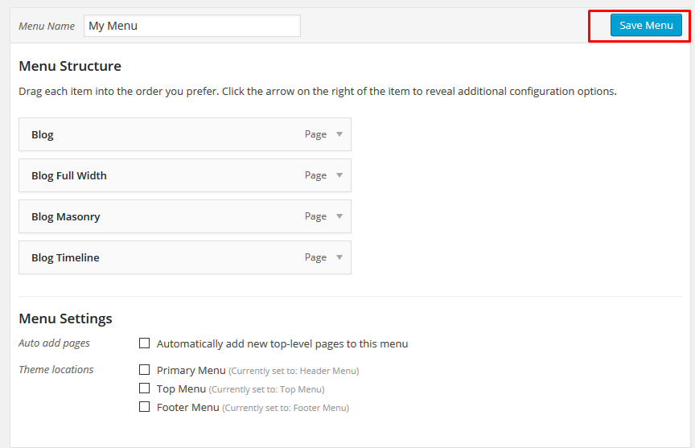
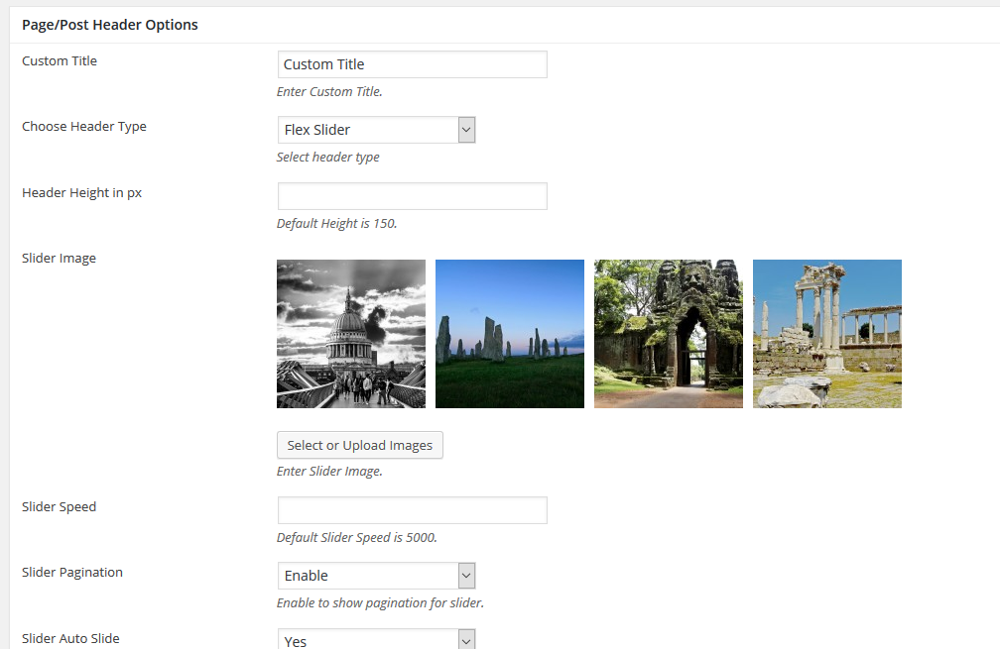
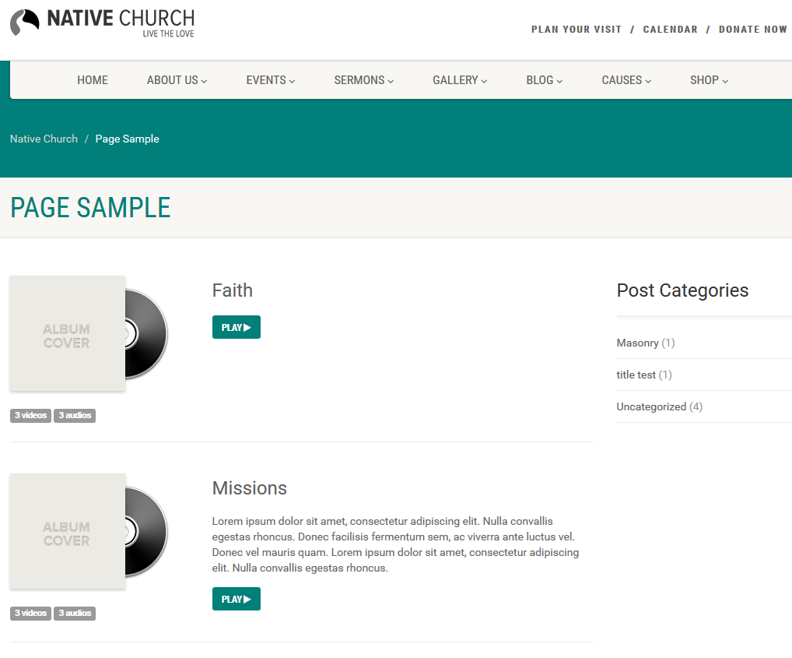
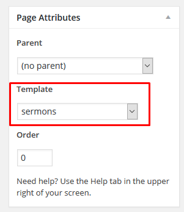
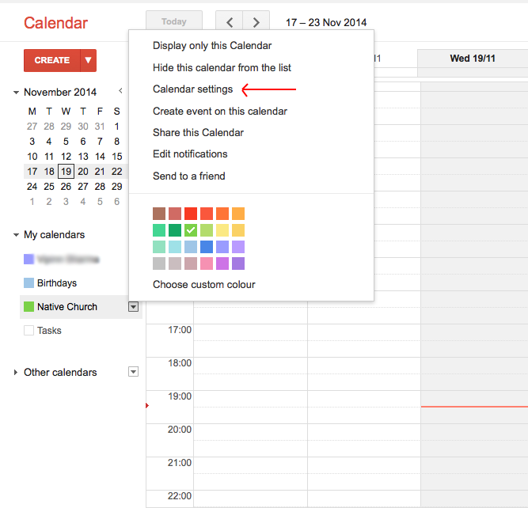

NativeChurch
Multi Purpose WordPress Theme / Version 2.6
- Introduction
- Installation
- Theme Installation via WordPress
- Theme Installation via FTP
- Plugin Installation
- Setting up the Demo Content
- Getting Started
- Upload Your Own Logo
- Setting up Menu
- Customize Navigation / Header
- Customize Theme Layout / Styling
- Creating Blog Posts
- Creating Pages
-
- Page Template : Blog Full Width
- Page Template : Blog Masonry
- Page Template : Blog Medium Thumbnails
- Page Template : Blog Timeline
- Page Template : Causes Grid
- Page Template : Causes List
- Page Template : Content with Sidebar
- Page Template : Event Category
- Page Template : Events Grid
- Page Template : Events List
- Page Template : Events Timeline
- Page Template : Full Width
- Page Template : Gallery Filter
- Page Template : Gallery Pagination
- Page Template : Gallery Masonry
- Page Template : Google Events
- Page Template : Home
- Page Template : Home 2
- Page Template : Home 3
- Page Template : Home Page Builder
- Page Template : Ministry
- Page Template : Sermon Albums
- Page Template : Staff
- Page Template : Contact
- Page Template : Sermons
- Creating Causes Posts
- Creating Gallery Items
- Creating Staff Post
- Creating Sermons
- Creating Events
- How to
- Use Page Builder
- Use Seamless Donation Plugin
- Google Calender
- Use Shortcodes
- Grid System
- Use Woocommerce
- Use Widgets
- Features
- Useful Stuffs
- Change Log
- Item Name : NativeChurch - Multi Purpose WordPress Theme
- Item Version : Version 2.5.3
- Minumum Required : WordPress Version 4.0
- Author by : imithemes
- Support via Email : envato@imithemes.com
- Support via Forum : support.imithemes.com
Thank you for purchasing 'NativeChurch - Multi Purpose Wordpress Theme'. This document covers the installation, set up, and use of this theme and provides answers and solutions to common problems and issues - we encourage you to read this document thoroughly if you are experiencing any difficulties. If you have any questions that are beyond the scope of this document, feel free to post them in the dedicated Support Forum. Thanks so much!
NativeChurch is a full functional powerful Wordpress Theme designed & developed for Church, Charity, Non-Profit and Religious Websites and comes handy for Portfolio & Corporate Websites. It is fully responsive WordPress theme based on Twitter Bootstrap 3.0 framework that makes it available for all screen sizes from the bigger ones to smartphones. Its not only responsive whereas it is retina ready also, now no blurry images on your HiDPI and retina devices.
How to use NativeChurch Template?
NativeChurch is very easy to update and modify, it will adapt your website and brand in no time. Steps for modification and updating are described step by step in this exclusive documentation.
Theme Installation via WordPress #back to top
Download the theme from Themeforest, you will get an archive file in .zip extension. Unzip that archive inside of the download folder called "NativeChurch-Theme.zip"
Please, follow the steps below to install NativeChurch Theme.
Step 1 : Login to your WordPress Dashdoard.
Step 2 : Go to Appearance > Themes. Click Add new button, located at the top of the screen or Add new theme.
Step 3 : Click on Upload button at the top of the screen and browse for "NativeChurch-Theme.zip".
Step 4 : Wait while the theme is uploaded and installed then activate the theme.
Step 5 : After activating the theme a notice should appear on the top of the screen, click on begin installing plugins
Step 6 : Select all the plugin, change Bulk Actions drop to Install then click apply.
Step 7 : Congratulation you are ready to use NativeChurch, check the Getting Started part of our documentation to see what you may want to do before starting to edit your WordPress Site.
Additional Guides : Installation video [NativeChurch WP Theme]
Go to Getting StartedTheme Installation via FTP #back to top
If you are going to install the theme using FTP, you would require an FTP Client, such as FileZilla.
Download the theme from Themeforest, you will get an archive file in .zip extension. Unzip that archive inside of the download folder called "NativeChurch-Theme.zip"
Please, follow the steps below to install NativeChurch Theme.
Step 1 : Log into your hosting space (server) via FTP client.
Step 2 : In extracted archive folder, find NativeChurch folder

Step 3 : Navigate to this path in your server.../wp-content/themes/ and upload the NativeChurch folder.
Step 4 : Login to your WordPress Dashboard and go to Appearance > Themes and activate the NativeChurch Theme.
Step 5 : After activating the theme a notice should appear on the top of the screen, click on begin installing plugins
Step 6 : Select all the plugin,change Bulk Actions drop to Install then click apply.
Step 7 : Congratulation you are ready to use NativeChurch, check the Getting Started part of our documentation to see what you may want to do before starting to edit your WordPress Site.
Go to Getting StartedPlugin Installation #back to top
As soon as you activate the NativeChurch Theme it will show up a message at top for the recommended plugins. Just go to Install Plugins page straight from the message box and follow up the screen instructions for further process. Please nore you need to activate the plugins after the installation to get them to work for you. You can always check for recommended and required plugins at Appearance > Install Plugins
Free Premium Plugins

Slider Revolution
Slider Revolution is an innovative, responsive WordPress Slider Plugin that displays your content the beautiful way. Whether it’s a Slider, Carousel, Hero Scene or even a whole Front Page, the visual, drag & drop editor will let you tell your own stories in no time!
Go to Getting StartedSetting up the Demo Content #back to top
One Click Demo
This theme comes with a "One Click Demo" install interface which is located at Theme Options > Demo Importer. This option works great on a fresh WordPress install and it is recommended as well. Just click the "Import Demo" button and wait for couple of minutes for the theme to download all posts and placeholder images from our server.
Before importing the dummy data Make sure you have all the plugin installed ( if you want to use woocommerce, make sure to install woocomerce first ).
Step 1 : Log into your WordPress Dashboard and navigate to Theme Options > Demo Importer
Step 2 : Then Click on Import Demo.
Step 3 : The Dummy content is really big and may takes more then 30 minutes to import depending where you are living, Do not interrupt/cancel the import process!
Step 4 : Once done importing you will just have to do some dimple steps.
Using traditional way of importing demo content
If you wish to the demo content via WordPress importer plugin and using wp native import command. For this you need to have the WordPress importer plugin installed on your website
Step 1 : Log into your WordPress Dashboard and navigate to Tools > Import. Then click on WordPress
Step 2 : Install and Activate importer plugin. Then select the XML file from your theme download file "content.xml" , it will be in a folder called "XML Dummy Content".
Step 3 : Once uploaded it will ask you to import the data into your WordPress user account select from the drop-down an existing user, also click on the check box that says “Download and import file attachments” Once complete all the data will be imported into your site. Do not interrupt/cancel the import process!
Setting up the Homepage
To set up the homepage navigate to Settings > Reading and configure the "Front Page Displays" setting. Select the static page option and choose the home page as your front page and "blog" page as your posts page.
Assigning menus to their repective positions just move to Appearance > menus
Go to Getting StartedUpload Your Own Logo #back to top
Please, follow the steps below to upload your logo:
Step 1 : Log into your WordPress Dashboard and navigate to Theme Options > Header Options > Upload Logo .
Step 2 : Upload a Logo ( Logo used by most of the devices including desktops and not retina devices ) or a Retina logo ( Retina Display is a marketing term developed by Apple to refer to devices and monitors that have a resolution and pixel density so high ). Size doesn't matter but if you want to make logo retina use a bigger size ( roughly 300 or more pixels per inch ).
Step 3 : If a retina logo is used, you may want to adjust the width or height options provided.
Step 4 : To Upload your favicon, navigate to Theme Options > General Options > Custom favicon . Your favicon should be a 32px x 32px Png/Gif image.
Continue Setting up MenuSetting up Menu #back to top
Creating a Menu
Step 1 : Log into your WordPress Dashboard and navigate to Appearance > Menus
Step 2 : Select Create a new menu at the top of the page.
Step 3 : Enter a name for your new menu in the Menu Name box and click create menu.
Step 5 : Your menu is now defined, and you can now add pages to it.
Go back to Setting up MenuAdding Pages to Menu
Step 1 : Locate the pane entitled Pages and within this pane, select the View All link to bring up a list of all the currently published Pages on your site.

Step 2 : Select the Pages that you want to add by clicking the checkbox next to each Page's title. Click the Add to Menu button located at the bottom of this pane to add your selection(s) to the menu that you created in the previous step.
Step 3 : Click the Save Menu button once you've added all the menu items you want.

Go back to Setting up MenuAssigning Menu to a Location
Step 1 : Navigate to Appearance > Menus and click Manage Locations.
Step 2 : Assign each Theme Location with a menu. You can assign menus to multiple Theme Locations.
Step 3 : Click the Save changes to confirm.
Go back to Setting up MenuMega Menu
Follow this support topic for more info: http://support.imithemes.com/forums/topic/how-to-create-a-mega-menu/
Here is a video describing the process of creating a Mega Menu.
Here are some steps to show you how to enable and use Mega Menu.
Step 1 : Navigate to Appearance > Menus and click Screen Options on the top right corner. Check the Mega Menu checkbox to enable it.
Step 2 : Check the "Create Column" checkbox and then click "Add to Menu" to add a new column for a Mega Menu.
Step 3 : Drag the Mega Menu to a parent menu item and check "Enable Mega Menu" checkbox.
Step 4 : Customize menu heading in the "Navigation Label" and add any icon to the title.
Step 5 : Choose a post type from the dropdown ( post, pages, causes, event, sermons, products, staff, gallery )
Step 6 : To show some specific page, post links then just leave the dropdown selection to default "Select Post Type" and enter the ids of the pages, posts in the text field provided
Go back to Setting up Menu Continue Customize Navigation / HeaderCustomize Theme Layout / Styling#back to top
Follow the steps below to find out how to customize the theme layout and styling.
Step 1 : Navigate to Theme Options > Layout Options > Page Layout . Choose between full width or boxed.
Step 2 : Customize the content, heading and page typography. Navigate to Theme Options > Styling > Body.
Continue Creating Blog PostsCreating Blog Posts #back to top
Create a Post
Step 1 : Log into your WordPress Dashboard and navigate to Posts > Add New
Step 2 : Enter your post title in the upper field, and enter your post body content in the main post editing box below it.
Step 3 : Select or create a category, add tags, and upload a featured image for your Post
Step 4 : Upload images into Post by clicking on the "Add Media".
Step 5 : Below you will see the Page/Post Header Options. Please check Page / Post Header Options for more information.
Step 6 : Select your preferred sidebar in the dropdown list and position to show on your post. Leave empty for default settings
Go back to Create Blog PostsCreate a Video Post
Step 1 : Log into your WordPress Dashboard and navigate to Posts > Add New
Step 2 : Change the Post format to Video
Step 3 : Insert your video link such as Vimeo or Youtube into the post body content. It will auto embed the video to your post content.
Step 4 : When you are finished, Update your Post, it should looks like this.
Step 5 : Post a video file such as mp4, mov, wmv, avi, ogv, 3gp, 3g2 and mpg. Click on the "Add Media" > "Insert Media" > "Upload Files" > "Select Files". Upload your video files.
Step 6 : When you are finished, Update your Post, it should looks like this
Step 7 : Select your preferred sidebar in the dropdown list and position to show on your post. Leave empty for default settings
Go back to Create Blog PostsCreate an Image Post
Step 1 : Log into your WordPress Dashboard and navigate to Posts > Add New
Step 2 : Change the Post format to Image

Step 3 : Insert your Image into the post body content. Click on the "Add Media" > "Insert Media" > "Upload Files" > "Select Files". Upload your Image.
Step 4 : Click on the edit button to change the image size to full size.
Step 5 : Select "Full Size" in the dropdown menu.
Step 5 : When you are finished, Update your Post, it should looks like this.
Step 6 : Select your preferred sidebar in the dropdown list and position to show on your post. Leave empty for default settings
Go back to Create Blog PostsCreate an Audio Post
Step 1 : Log into your WordPress Dashboard and navigate to Posts > Add New
Step 2 : Change the Post format to Audio
Step 3 : Insert your audio link such as SoundCloud into the post body content. It will auto embed the soundcloud to your post content.
Step 4 : When you are finished, Update your Post, it should looks like this.
Step 5 : Post an audio file such as mp3, ogg, m4a, wma and wav. Click on the "Add Media" > "Create Audio Playlist" > "Upload Files" > "Select Files". You may choose to include multiple audio files into a playlist.
Step 6 : When you are finished, Update your Post, it should looks like this.
Step 7 : Select your preferred sidebar in the dropdown list and position to show on your post. Leave empty for default settings
Go back to Create Blog PostsPage / Post Header Options
If you can't see the options panel, kindly check the screen options to enable it.
Custom Title : Inserts a title on top of the post title
Choose Header Type : Banner Image
Banner Image : Click on "Select or Upload Images" button and upload a single image.
Header Height in px : You may adjust the banner image height in px.
Choose Header Type : Flex Slider
Header Height in px : You may adjust the Flex Slider height in px.
Slider Image : Click on "Select or Upload Images" button to upload your images.

Slider Speed : Sliding Speed of the Flex Slider
Slider Pagination : Enable or Disable Slider Pagination
Slider Auto Slide : Enable or disable Flex Slider to auto slide when loaded.
Slider Direction Arrows : Show or hide Flex Slider Direction Arrows.
Slider Effects : Choose between fade or slide.
Go back to Create Blog Posts Continue Creating PagesCreating Pages#back to top
- Create a Page
- Page Template : Blog Full Width
- Page Template : Blog Masonry
- Page Template : Blog Medium Thumbnails
- Page Template : Blog Timeline
- Page Template : Causes Grid
- Page Template : Causes List
- Page Template : Content with Sidebar
- Page Template : Event Category
- Page Template : Events Grid
- Page Template : Events List
- Page Template : Events Timeline
- Page Template : Full Width
- Page Template : Gallery Filter
- Page Template : Gallery Pagination
- Page Template : Gallery Masonry
- Page Template : Google Events
- Page Template : Home
- Page Template : Home 2
- Page Template : Home 3
- Page Template : Home Page Builder
- Page Template : Ministry
- Page Template : Sermon Albums
- Page Template : Staff
- Page Template : Contact
- Page Template : Sermons
Create a Page
Step 1 : Log into your WordPress Dashboard and navigate to Pages > Add New
Step 2 : Locate the Template and in the dropdown menu, select Default Template.
Step 3 : Enter your page title in the upper field, and enter your page body content in the main page editing box below it.
Step 4 : To customize the Page/Post Header Options. Please check Page / Post Header Options for more information.
Go back to Create PagesPage Template : Blog Full Width
This template will display the blog posts in full width without sidebars.
Step 1 : Log into your WordPress Dashboard and navigate to Pages > Add New
Step 2 : Locate the Template and in the dropdown menu, select Blog Full Width.

Step 3 : Choose your posts category you wish to show.
Step 4 : When you are finished, Update your page, it should looks like this
Step 5 : To customize the Page/Post Header Options. Please check Page / Post Header Options for more information.

Page Template : Blog Masonry
This template will display the blog posts in Masonry style.
Step 1 : Log into your WordPress Dashboard and navigate to Pages > Add New
Step 2 : Locate the Template and in the dropdown menu, select Blog Masonry.
Step 3 : Choose your posts category you wish to show.
Step 4 : Set the thumbnail image to open in a lightbox or in the single post.
Step 5 : Select your preferred sidebar in the dropdown list and position to show on your post. Leave empty for default settings
Step 6 : When you are finished, Update your page, it should looks like this.
Step 7 : To customize the Page/Post Header Options. Please check Page / Post Header Options for more information.
Go back to Create PagesPage Template : Blog Medium Thumbnails
This template will display the blog posts in Masonry style.
Step 1 : Log into your WordPress Dashboard and navigate to Pages > Add New
Step 2 : Locate the Template and in the dropdown menu, select Blog Medium Thumbnails.
Step 3 : Choose your posts category you wish to show.
Step 4 : Set the thumbnail image to open in a lightbox or in the single post.
Step 5 : When you are finished, Update your page, it should looks like this.
Step 6 : To customize the Page/Post Header Options. Please check Page / Post Header Options for more information.
Go back to Create PagesPage Template : Blog Timeline
This template will display the blog posts in Timeline style.
Step 1 : Log into your WordPress Dashboard and navigate to Pages > Add New
Step 2 : Locate the Template and in the dropdown menu, select Blog Timeline.
Step 3 : Choose your posts category you wish to show
Step 4 : Set the thumbnail image to open in a lightbox or in the single post.
Step 5 : When you are finished, Update your page, it should looks like this.
Step 6 : To customize the Page/Post Header Options. Please check Page / Post Header Options for more information.
Go back to Create PagesPage Template : Causes Grid
This template will display the Causes post type in a grid.
Please check Causes Post Type for more information.
Step 1 : Log into your WordPress Dashboard and navigate to Pages > Add New
Step 2 : Locate the Template and in the dropdown menu, select Causes Grid.
Step 3 : When you are finished, Update your page, it should looks like this.
Go back to Create PagesPage Template : Causes List
This template will display the Causes post type in a list.
Please check Causes Post Type for more information.
Step 1 : Log into your WordPress Dashboard and navigate to Pages > Add New
Step 2 : Locate the Template and in the dropdown menu, select Causes List.
Step 3 : When you are finished, Update your page, it should looks like this.
Go back to Create PagesPage Template : Content with Sidebar
This template will display a page with sidebar.
Step 1 : Log into your WordPress Dashboard and navigate to Pages > Add New
Step 2 : Locate the Template and in the dropdown menu, select Content with Sidebar.
Step 3 : Select your preferred sidebar in the dropdown list and position to show on your page. Leave empty for default settings
Step 4 : When you are finished, Update your page, it should looks like this.
Go back to Create PagesPage Template : Event Category
This template will display list of Events by category.
Please check Events Post Type for more information.
Step 1 : Log into your WordPress Dashboard and navigate to Pages > Add New
Step 2 : Locate the Template and in the dropdown menu, select Event Category.
Step 3 : Choose your Event category you wish to show.
Step 4 : When you are finished, Update your page, it should looks like this.
Go back to Create PagesPage Template : Events Grid
This template will display list of Events in a grid.
Please check Events Post Type for more information.
Step 1 : Log into your WordPress Dashboard and navigate to Pages > Add New
Step 2 : Locate the Template and in the dropdown menu, select Events Grid.
Step 3 : Choose your Event category you wish to show.
Step 4 : When you are finished, Update your page, it should looks like this.
Go back to Create PagesPage Template : Events List
This template will display list of Events.
Please check Events Post Type for more information.
Step 1 : Log into your WordPress Dashboard and navigate to Pages > Add New
Step 2 : Locate the Template and in the dropdown menu, select Events List.
Step 3 : Choose your Event category you wish to show.
Step 4 : When you are finished, Update your page, it should looks like this.
Go back to Create PagesPage Template : Events Timeline
This template will display list of Events in a timeline.
Please check Events Post Type for more information.
Step 1 : Log into your WordPress Dashboard and navigate to Pages > Add New
Step 2 : Locate the Template and in the dropdown menu, select Events Timeline.
Step 3 : Choose your Event category you wish to show.
Step 4 : When you are finished, Update your page, it should looks like this.
Go back to Create PagesPage Template : Full Width
This template will display the page title and content full width without sidebars.
Step 1 : Log into your WordPress Dashboard and navigate to Pages > Add New
Step 2 : Locate the Template and in the dropdown menu, select Full Width.
Step 3 : When you are finished, Update your page, it should looks like this.
Go back to Create PagesPage Template : Gallery Filter
This template will display the gallery post type in grid
Please check Gallery Post Type for more information.
Step 1 : Log into your WordPress Dashboard and navigate to Pages > Add New
Step 2 : Locate the Template and in the dropdown menu, select Gallery Filter.
Step 3 : In the Gallery Metabox Options. Insert the number of columns for the layout to show on gallery filter page.
Step 4 : Enable or disable gallery items title.
Step 5 : Choose your Gallery category you wish to show.
Step 6 : When you are finished, Update your page, it should looks like this.
Go back to Create PagesPage Template : Gallery Pagination
This template will insert a pagination function into the gallery
Please check Gallery Post Type for more information.
Step 1 : Log into your WordPress Dashboard and navigate to Pages > Add New
Step 2 : Locate the Template and in the dropdown menu, select Gallery Pagination.
Step 3 : In the Gallery Metabox Options. Insert the number of gallery in a single page and columns for the layout to show on gallery filter page.
Step 4 : Enable or disable gallery items title.
Step 5 : Choose your Gallery category you wish to show.
Step 6 : When you are finished, Update your page, it should looks like this.
Go back to Create PagesPage Template : Gallery Masonry
This template will display the gallery items in Masonry style
Please check Gallery Post Type for more information.
Step 1 : Log into your WordPress Dashboard and navigate to Pages > Add New
Step 2 : Locate the Template and in the dropdown menu, select Gallery Pagination.
Step 3 : In the Gallery Metabox Options. Insert the number of columns for the layout to show on gallery filter page.
Step 4 : Enable or disable gallery items title.
Step 5 : Choose your Gallery category you wish to show.
Step 6 : When you are finished, Update your page, it should looks like this.
Go back to Create PagesPage Template : Google Events
Please check Google Calender for more information.
Go back to Create PagesPage Template : Home
This template is used for creating a Home page with options to show sliders, events, featured posts and galleries.
Step 1 : Log into your WordPress Dashboard and navigate to Pages > Add New
Step 2 : Locate the Template and in the dropdown menu, select Home.
Step 3 : There are some options to customize your home template. The Page/Post Header Options. Please check Page / Post Header Options for more information.
Step 4 : The Slider Metabox allows you to insert a Flex or Revolution Slider on the home page.
Choose Slider : Flex Slider or Revolution Slider
Slider Image : Click on "Select or Upload Images" button to upload your images.
Slider Speed : Sliding Speed of the Flex Slider
Slider Pagination : Enable or Disable Slider Pagination
Slider Auto Slide : Enable or disable Flex Slider to auto slide when loaded.
Slider Direction Arrows : Show or hide Flex Slider Direction Arrows.
Slider Effects : Choose between fade or slide.
Step 5 : Select option for Area Under Slider.
Switch for section under slider : Enable or disable the area under slider.
Recent Event/Sermon : Choose to display recent events, sermons or custom messages.
Event Category : Select the category to display
Switch for going on events : Enable or Disable displaying of going on events.

Step 6 : Featured Blocks Area.
Switch for featured blocks : Enable or disable the featured blocks.
Featured Blocks to show on home page : Insert post or page id's
Title for featured blocks : Insert a custom title for the featured blocks.
Additonal Guides : Managing the homepage Blocks/Elements
Go back to Create PagesPage Template : Home 2
This template is used for creating a Home page with options to show posts and galleries.
Step 1 : Log into your WordPress Dashboard and navigate to Pages > Add New
Step 2 : Locate the Template and in the dropdown menu, select Home 2.
Step 3 : There are some options to customize your home template. The Page/Post Header Options. Please check Page / Post Header Options for more information.
Step 4 : Categories Area.
Switch for Categories Area : Enable or disable categories area
Category show on home page : Select your category to display
Number of Post : Set your preferred post limit.
Step 5 : Recent Galleries Area.
Please check Gallery Post Type for more information.
Switch for gallery : Enable or disable Galleries area
Gallery Categories : Select your gallery category to display
Custom Gallery Title : Insert a custom gallery title.
Custom More Galleries Title : Change the "More" to custom texts
Custom More Galleries Url : Insert the URL Link for the "More" Button.
Number of Galleries to show on home page : Set your preferred Gallery item limit.
Upload Background Image : Upload a custom background image.
Go back to Create PagesPage Template : Home 3
This template is used for creating a Home page with options to show posts, sliders, events, sermons and galleries.
Step 1 : Log into your WordPress Dashboard and navigate to Pages > Add New
Step 2 : Locate the Template and in the dropdown menu, select Home 3.
Step 3 : There are some options to customize your home template. The Page/Post Header Options. Please check Page / Post Header Options for more information.
Step 4 : Slider Metabox.
Choose Slider : Flex Slider or Revolution Slider
Slider Image : Click on "Select or Upload Images" button to upload your images.
Slider Speed : Sliding Speed of the Flex Slider
Slider Pagination : Enable or Disable Slider Pagination
Slider Auto Slide : Enable or disable Flex Slider to auto slide when loaded.
Slider Direction Arrows : Show or hide Flex Slider Direction Arrows.
Slider Effects : Choose between fade or slide.
Step 5 : Upcoming Events Area.
Switch for upcoming events : Enable or disable upcoming events area.
Event Category : Select your event category to display
Custom More Upcoming Events Title : Change the "More" to custom texts
Number of Events to show on home page : Set your preferred Event limit.
Step 6 : Recent Posts Area.
Switch for recent post : Enable or disable Recent Posts area
Post Category : Select your posts category to display
Custom Latest News Title : Insert a custom latest news title.
Number of Recent Posts to show on home page : Set your preferred recent posts limit.
Show read more button : Show or hide read more button.
Custom read more button text : Insert a custom read more button text.

Step 7 : Recent Galleries Area.
Please check Gallery Post Type for more information.
Switch for gallery : Enable or disable Galleries area
Gallery Categories : Select your gallery category to display
Custom Gallery Title : Insert a custom gallery title.
Custom More Galleries Title : Change the "More" to custom texts
Custom More Galleries Url : Insert the URL Link for the "More" Button.
Number of Galleries to show on home page : Set your preferred Gallery item limit.
Upload Background Image : Upload a custom background image.
Step 8 : Latest Sermon Albums.
Switch for Sermon Albums : Enable or disable Sermon Albums
Custom Latest Sermon Albums Title : Insert a custom Latest Sermon Albums title.
Number of Sermon Albums : Set your preferred Sermon Albums limit.
All Sermon Albums Url : Insert the URL Link for the "All Albums" Button.
Go back to Create PagesPage Template : Home Page Builder
This template is used for creating a Home page using a page builder.
Please check Page Builder for more information.
Step 1 : Log into your WordPress Dashboard and navigate to Pages > Add New
Step 2 : Locate the Template and in the dropdown menu, select Home Page Builder.
Example of using Home Page Builder.
Step 3 : There are some options to customize your home template. The Page/Post Header Options. Please check Page / Post Header Options for more information.
Step 4 : Select the Page Builder and start building your home page.
Step 5 : The Slider Metabox allows you to insert a Flex or Revolution Slider on the home page.
Choose Slider : Flex Slider or Revolution Slider
Slider Image : Click on "Select or Upload Images" button to upload your images.
Slider Speed : Sliding Speed of the Flex Slider
Slider Pagination : Enable or Disable Slider Pagination
Slider Auto Slide : Enable or disable Flex Slider to auto slide when loaded.
Slider Direction Arrows : Show or hide Flex Slider Direction Arrows.
Slider Effects : Choose between fade or slide.
Step 5 : Select option for Area Under Slider.
Switch for section under slider : Enable or disable the area under slider.
Recent Event/Sermon : Choose to display recent events, sermons or custom messages.
Event Category : Select the category to display
Switch for going on events : Enable or Disable displaying of going on events.
Go back to Create PagesPage Template : Sermon Albums
This template is used for displaying Sermon Albums
Please check Sermons for more information.
Step 1 : Log into your WordPress Dashboard and navigate to Pages > Add New
Step 2 : Locate the Template and in the dropdown menu, select Sermon Albums.
Step 3 : There are some options to customize your home template. The Page/Post Header Options. Please check Page / Post Header Options for more information.
Step 4 : Show Sermon Categories/Albums.
Select Orderby : Order Sermon Albums by Count, ID, Name and Slug
Select Order : Order By Ascending or Descending.
Step 5 : When you are finished, Update your page, it should looks like this.

Go back to Create PagesPage Template : Staff
This template is used for displaying Staff post type
Please check Staff for more information.
Step 1 : Log into your WordPress Dashboard and navigate to Pages > Add New
Step 2 : Locate the Template and in the dropdown menu, select Staff.
Step 3 : There are some options to customize your home template. The Page/Post Header Options. Please check Page / Post Header Options for more information.
Step 4 : Staff to show.
Number of Staff to show : Insert the number of staffs to display.
Staff Category : Select your staff category to display.
Select Orderby : Order your staff's by ID or Menu Order.
Step 5 : When you are finished, Update your page, it should looks like this.
Go back to Create PagesPage Template : Contact
This template is used for creating a contact us page.
Step 1 : Log into your WordPress Dashboard and navigate to Pages > Add New
Step 2 : Locate the Template and in the dropdown menu, select contact.
Step 3 : There are some options to customize your home template. The Page/Post Header Options. Please check Page / Post Header Options for more information.
Step 4 : Email & Subject
Email : Insert your email address for incoming feedbacks.
Subject : Insert your email subject for incoming feedbacks.
Step 5 : Map Box
Our Location Text : Insert your Our Location Text.
Map Display : Enable or disable map.
Map Box Code : Insert your Map Box Code.
Register an Account at http://www.mapbox.com
Select your location and copy the embed into the Map Box Code
Step 6 : When you are finished, Update your page, it should looks like this.
Go back to Create PagesPage Template : Sermons
This template is used for displaying Sermons posts type.
Please check Sermons for more information.
Step 1 : Log into your WordPress Dashboard and navigate to Pages > Add New
Step 2 : Locate the Template and in the dropdown menu, select Sermons.

Step 3 : There are some options to customize your home template. The Page/Post Header Options. Please check Page / Post Header Options for more information.
Step 4 : When you are finished, Update your page, it should looks like this.
Go back to Create Pages Continue Creating Causes PostsCreating Causes Posts#back to top
Create a Cause
This section of the documentation will guide you on how to create Causes posts
Step 1 : Log into your WordPress Dashboard and navigate to Causes > Add New
Step 2 : Enter your causes title in the upper field, and enter your causes body content in the main page editing box below it.
Step 3 : Create a category for your Causes
Step 4 : Upload an image for your Causes
Step 5 : Cause Details
Cause End Date : Insert an end date for your Causes.
Cause Amount : Insert the required amount of donation.
Cause Amount Received : Insert the amount received from donation.
Step 6 : Navigate to Appearance > Payment Options and insert your Paypal information there.
Step 7 : When you are finished, Update your page, it should looks like this.
More information regarding Causes Payments can be found here
Creating Gallery Items#back to top
Create a Gallery Item
This section of the documentation will guide you on how to create a gallery item.
Step 1 : Log into your WordPress Dashboard and navigate to Gallery > Add New
Step 2 : Enter your gallery item title in the upper field
Step 3 : Create a category for your Gallery Item
Step 4 : Upload an image for your Gallery Item
Step 5 : When you are finished, Update your post, it should looks like this.
Go back to Create Causes Continue Creating Staff PostCreating Staff Post#back to top
Create a Staff Post
This section of the documentation will guide you on how to create a Staff Post.
Step 1 : Log into your WordPress Dashboard and navigate to Staff > Add New
Step 2 : Enter your Staff title in the upper field, and enter your staff body content in the main page editing box below it.
Step 3 : Create a category for your Staff
Step 4 : Upload an image for your Staff

Step 5 : Staff Member Meta
Email : Insert your staff email address.
Phone Number : Insert your staff phone number.
Job Title : Insert your staff job title.
Social Icon : Insert your staff social network informations. Click on the textbox provided and you will see a dropdown menu below to choose your social icon. Click on the + sign to add more social network informations.
Step 6 : When you are finished, Update your post, it should looks like this.
Continue to Creating Sermons PostCreating Sermons Post#back to top
Create a Sermon Post
This section of the documentation will guide you on how to create a Sermon Post.
Step 1 : Log into your WordPress Dashboard and navigate to Sermons > Add New
Step 2 : Enter your Sermon title in the upper field, and enter your Sermon body content in the main page editing box below it.
Step 3 : Create a category for your Sermon
Step 4 : Insert Tags your Sermon
Step 5 : Select your Sermon Speaker
Please check Sermon Speakers for more information.
Step 6 : Sermons Meta Box
Upload Audio : Choose to upload an audio or insert an audio URL link.
Audio : Information regarding your uploaded audio.
Sermon Video : Choose to upload a video file, such as .mp4, .webm and .ogv. You may also insert a Vimeo or Youtube link for your video.
Upload PDF : Upload a PDF file for users to download.
Additional Media Attachments : Upload additional media files.
Step 7 : Sermon Podcast
Sermon short description : Enter a short description to show at podcast players.
Step 8 : When you are finished, Update your post, it should looks like this.
Go back to Create a Sermon PostCreate a Sermon Speaker
This section will guide you on how to create a Sermon Speaker.
Step 1 : Log into your WordPress Dashboard and navigate to Sermons > Sermons Speakers
Step 2 : Enter your Sermon Name in the "Name" textbox and click "Add New Category".
Go back to Create a Sermon Post Continue to Creating EventsCreating Events#back to top
Create an Event
This section of the documentation will guide you on how to create an Event.
Step 1 : Log into your WordPress Dashboard and navigate to Events > Add New
Step 2 : Enter your Event title in the upper field, and enter your Event body content in the main page editing box below it.
Step 3 : Create a category for your Event
Step 4 : Upload an image for your Event
Step 5 : Event Details Meta Box
Event Start Date : Insert a start date for your event.
Event End Date : Insert an end date for your event.
All Day Event : Check the checkbox if it is an all day event.
Address : Location of the event held.
Contact Number : Insert a contact number.
Guest Registration : Enable or disable Guest Registration.
Event Registration : Enable or disable Event Registration.
Step 6 : Event Recurrence Box
Event Frequency : Set your preferred frequency of this event, such as repeat weekly, monthly, yearly and etc.
Number of times to repeat event : Insert the number of times this event will repeat.
Step 7 : When you are finished, Update your post, it should looks like this.
Continue to Use Page BuilderUse Page Builder#back to top
Using Page Builder
Kindly refer to this documentation on how to use the page builder or refer to the video below.
Page Builder 2 Overview from Greg Priday on Vimeo.
Visit our support forums for more information regarding the Page Builder
Continue to Use Seamless Donation PluginUse Seamless Donation Plugin#back to top
Using Seamless Donation Plugin
Kindly refer to this documentation on how to use the Seamless Donation Plugin
Continue to Google CalenderGoogle Calender#back to top
Setup Google Calendar
This section of the documentation will guide you on how to get your google calendar API key and ID to use for showing your Google Calendar Events in your Native Church Calendar.
Step 1 : Log into your Google Account and proceed to this URL: https://console.developers.google.com/project
Step 2 : Create a "New Project" by inserting a name for your project.
Step 3 : Click on the "Enable Google APIs for use in your apps" to generate an API key.
Step 4 : Search for "Calendar API" and click on the link provided.

Step 5 : Click on the "Enable" button to activate the Calendar API
Step 6 : On the left sidebar, click on "Credentials" link under APIs and auth heading. Then on the popup, click on "Add credentials".
Step 7 : Click on "Browser Key" to continue.
Step 8 : Insert a Name for your Browser Key and click on "Create" button to continue
Step 9 : Copy your API key and make sure to keep it private.
Step 10 : Log into your WordPress Dashboard and navigate to Theme Options > Calendar Options. Paste your API key into "Google Calendar API Key" textbox.
Step 11 : Next step is to get your Google Calendar "ID" and to get that go to your Google Calendars page here.

Step 12 : Click on any calendar's arrow which you want to share at the left sidebar under "My calendars" tab. On the popover click on "Calendar settings".

Step 13 : Locate the calendar ID which needs to put at Theme Options > Calendar Options. Paste your calendar ID into "Google Calendar ID" textbox.
Step 14 : When you are finished, create a page with the "Default Template" and insert the shortcode below to show the Google Calendar.
[container extra="row"]
[event_calendar category_id=""]
[/container]
Step 15 : When you are finished, Update your page, it should looks like this.
Continue to Use ShortcodesUse Shortcodes#back to top
Using Shortcodes
Here are some shortcode examples.
Accordion
[accordions id="Accordion"]
[accgroup]
[acchead id="Accordion" tab_id="Accordion0" class="active"]Accordion Panel #1[/acchead]
[accbody tab_id="Accordion0" in="in"]Accordion Body #1[/accbody]
[/accgroup]
[accgroup]
[acchead id="Accordion" tab_id="Accordion1" class=""]Accordion Panel #2[/acchead]
[accbody tab_id="Accordion1" in=""]Accordion Body #2[/accbody]
[/accgroup]
[accgroup]
[acchead id="Accordion" tab_id="Accordion2" class=""]Accordion Panel #3[/acchead]
[accbody tab_id="Accordion2" in=""]Accordion Body #3[/accbody]
[/accgroup]
[/accordions]
Calendar
[event_calendar category_id=""]
Tabs
[tabs]
[tabh]
[tab id="Tabs0" class="active"]TAB HEAD 1[/tab]
[tab id="Tabs1" class=""]TAB HEAD 2[/tab]
[tab id="Tabs2" class=""]TAB HEAD 3[/tab]
[/tabh]
[tabc]
[tabrow id="Tabs0" class="active"]TAB CONTENT1[/tabrow]
[tabrow id="Tabs1" class=""]TAB CONTENT2[/tabrow]
[tabrow id="Tabs2" class=""]TAB CONTENT3[/tabrow]
[/tabc]
[/tabs]
Full width video
[fullscreenvideo videourl="https://www.youtube.com/watch?v=QiZm2VYiSfw"]
Toggles
[toggles id="Toggles"]
[togglegroup]
[togglehead id="Toggles" tab_id="Toggles0"]Toggle Panel #1[/togglehead]
[togglebody tab_id="Toggles0"]Toggle Body #1[/togglebody]
[/togglegroup]
[togglegroup]
[togglehead id="Toggles" tab_id="Toggles1"]Toggle Panel #2[/togglehead]
[togglebody tab_id="Toggles1"]Toggle Body #2[/togglebody]
[/togglegroup]
[togglegroup]
[togglehead id="Toggles" tab_id="Toggles2"]Toggle Panel #3[/togglehead]
[togglebody tab_id="Toggles2"]Toggle Body #3[/togglebody]
[/togglegroup]
[/toggles]
Kindly refer to this PDF Documentation on how to use NativeChurch Shortcodes
Additional Information : New calendar shortcode for NativeChurch v1.9.2
Continue to Grid SystemGrid System#back to top
Grid System
Kindly refer to this http://getbootstrap.com/css/#grid on how to use the grid system.
Continue to WoocommerceUse Woocommerce#back to top
Using Woocommerce
NativeChurch supports Woocommerce, this allows you to sell and manage your products.
Kindly refer to this documentation on how to use Woocommerce
Continue to Use WidgetsUse Widgets#back to top
Using Widgets
List of some included Widgets
- Advertisement
- Custom Categories
- Custom Menu
- Featured Event
- Latest Gallery
- Post Loop
- Recent Sermons
- Sermon Speakers
- and many more...
To use widgets, drag your widget into the sidebars and footers
Kindly refer to How to Setup and Use Widget.
Additional Information : WordPress Widgets - Codex for more information on how to use WordPress Widgets.
Continue to Theme OptionsTheme Options#back to top
Theme Options
General Options
Enable Maintenance : Put your blog into maintenance mode.
Enable Responsive : Responsive Mobile/Tablet Compatibility.
Enable WP Thumbnail : Enable/Disable the wordpress image thumbnail sizes for the website. If its disable then full size images will be used.
Enable Back To Top : Enable the back to top button that appears at the bottom right corner of the screen.
Enable RTL : Enable this option to support RTL languages.
Custom favicon : Use a custom favicon for your blog.
Custom admin login logo : Upload a custom login logo for your blog. Navigate to yoursite.com/login to check it.
Tracking Code : Paste your Google Analytics (or other) tracking code here. This will be added into the header template of your theme. Please put code without opening and closing script tags.
Header Options
Sub Pages Header Image : Set this image as default header image for all Page/Post/Event/Sermons/Gallery.
Upload Logo : Upload a custom logo for your blog.
Upload Logo for Retina Devices : Upload a custom logo for Retina Devices.
Standard Logo Width for Retina Logo : Enter the standard logo width for Retina.
Standard Logo Height for Retina Logo : Enter the standard logo height for Retina.
Enable Header Stick : Enable this will make your menu navigation stick on the top of your blog.
Enable Top Menu for Mobile : Enable/Disable top navigation for small screen devices. If enabled, your top navigation will show as select menu on mobile devices.
Header Layout : Choose one of these pre-defined Header Layouts.
Social Links : Enter the social links and sort to active and display according to sequence in header.
Footer Options
Footer Copyright Text : Enter your custom copyright texts on the footer.
Footer Layout : Choose your footer widget layout size.
Social Links : Enter the social links and sort to active and display according to sequence in footer.
Layout Options
Site Width : Controls the overall site width.
Page Layout : Choose between full width or boxed width.
Sidebar Options
Sidebar position : Select left or right sidebar position.
Post Sidebar Option : Select sidebar to display by default on post pages.
Page Sidebar Option : Select sidebar to display by default on pages.
Event Sidebar Option : Select sidebar to display by default on events.
Cause Sidebar Option : Select sidebar to display by default on causes.
Sermon Sidebar Option : Select sidebar to display by default on sermon pages.
Staff Sidebar Option : Select sidebar to display by default on staff pages.
bbpress Sidebar Option : Select sidebar to display by default on all bbpress pages globally.
Color Options
Site Color Scheme : Select the color scheme of the website or choose a custom color.
Custom Color : Pick a primary color for the template.
Predefined Schemes : Select your themes alternative color scheme.
Styling
Global Font Options
Primary font : Global Body Fonts Styling
Secondary font : Global Heading Fonts Styling
Metatext/date Cursive Font : Global Metatext date Fonts Styling
Header
100% Header Width : Check this box to set the header to 100% of the browser width. Uncheck to follow site width. Only works with wide layout mode.
Header Area Height : Enter height for header Area
Mobile Menu Icon : Mobile Menu Icon Color and font size.
Show text with mobile menu icon : Enter text you want to show next to mobile menu icon.
Header(Logo Area) Translucent Background : Choose a color for your Header translucent background.
Header(Logo Area) Background Image : Style your Header Background Image.
Navigation Bar Background : Choose a color for your Menu Navigation Bar Background.
Sticky Navigation Background : Choose a color for your Sticky Menu Navigation Background.
Top Navigation Typography : Select your preferred Typography and style.
Top Navigation Link Color : Set the top navigation parent links color, hover, active.
Top Menu Dropdown Background : Choose a color for your top menu dropdown background.
Top Menu Dropdown Links Border Bottom : Choose a size for your top menu dropdown links border bottom.
Top Navigation Dropdown Typography : Select your preferred Typography and style.
Top Menu Dropdown Link Color : Set the dropdown menu links color, hover, active.
Main Navigation Typography : Select your preferred Typography and style.
Main Navigation Link Color : Set the top navigation parent links color, hover, active.
Main Menu Dropdown Background : Choose a color for your main menu dropdown background.
Main Menu Dropdown Links Border Bottom : Choose a size for your main menu dropdown links border bottom.
Main Navigation Dropdown Typography : Select your preferred Typography and style.
Main Menu Dropdown Link Color : Set the dropdown main menu links color, hover, active.
Body
Top and Bottom padding for page content : Enter top and bottom padding for page content.
Minimum Height for Content : Enter minimum height for the page content.
Body text default typography : Select your preferred Typography and style.
H1 heading typography : Select your preferred Typography and style.
H2 heading typography : Select your preferred Typography and style.
H3 heading typography : Select your preferred Typography and style.
H4 heading typography : Select your preferred Typography and style.
H5 heading typography : Select your preferred Typography and style.
H6 heading typography : Select your preferred Typography and style.
Footer
100% Footer Width : Set the dropdown main menu links color, hover, active.
Footer Widget Area Padding : Enter Top and Bottom padding values for the footer widget area.
Footer Copyrights Area Padding : Enter Top and Bottom padding values for the footer copyrights area.
Footer(Widgets Area) Background : Style your Footer Widgets Area Background.
Footer(Widgets Area) Typography : Select your preferred Typography and style.
Footer Widgets Title Typography : Select your preferred Typography and style.
Border Bottom for Footer Widget Lists : Choose a size for your border bottom Footer Widget Lists.
Footer(Widgets Area) Link Color : Choose a color for your footer widgets area Link Color.
Footer(Copyrights Area) Background : Style your Footer Copyrights Area Background.
Footer(Copyrights Area) Typography : Select your preferred Typography and style.
Footer(Copyrights Area) Links Color : Set your footer copyrights area links color, hover, active.
Footer Social Icons Background : Choose a color for your Footer Social Icons Background.
Footer Social Icons Hover Background : Choose a color for your Footer Social Icons Hover Background.
Footer Social Icons Link Color : Choose a color for your Footer Social Icons Link Color.
Footer Social Icons Dimensions : Set the dimensions of your footer social icons.
Footer Social Links typography : Select your preferred Typography and style.
Share Options
Social Sharing : Enable/Disable theme default social sharing buttons for posts/events/sermons/causes single pages.
Share Buttons Style : Choose between rounded and squared share buttons.
Share Buttons Color : Choose the color scheme of the share button icons.
Social share options : Click on the buttons to disable/enable share buttons.
Select share buttons for post types : Select which area you would like to show your share buttons.
Podcast Options
Podcast Title : Insert your Podcast title.
Podcast Description : Insert your Podcast Description.
Website Link : Insert a Website link for your Podcast.
Language : Choose a Language for your Podcast.
Copyright : Insert a copyright text for your Podcast.
Webmaster Name : Insert a Webmaster Name.
Webmaster Email : Insert a Webmaster Email.
Author : This will display at the "Artist" in the iTunes Store.
Subtitle : Your subtitle should briefly tell the listener what they can expect to hear.
Summary : Insert a brief statement about your mission and in what region your audio content originates.
Owner Name : This should typically be the name of your Church.
Owner Email : Use an email address that you dont mind being made public. If someone wants to contact you regarding your Podcast this is the address they will use.
Cover Image : Upload a custom image for your Podcast.
Top Category : Choose the appropriate top-level category for your Podcast listing in iTunes.
Sub Category : Choose the appropriate sub category for your Podcast listing in iTunes.
Feed URL : This is your Feed URL to submit to iTunes.
Calendar Options
Calendar Header View : Select the view for your calendar header.
Limit of Events : Enter a number to limit number of events to show maximum in a single day block of calendar and remaining in a small popover.
Calendar Month Name : Insert month name in local language.
Calendar Month Name Short : Insert month name short in local language.
Calendar Day Name : Insert day name in local language.
Calendar Day Name Short : Insert day name short in local language
Heading Today : Translate Calendar Heading for Today Button.
Heading Month : Translate Calendar Heading for Month Button.
Heading Week : Translate Calendar Heading for Week Button.
Heading Day : Translate Calendar Heading for Day Button.
Show WP Events : Check if you want to show your Wordpress Events in Calendar.
Google Calendar Feed URL : Enter Google Feed URL to show google events in whole Website along with calendar.
Google Calendar API Key : Enter Google Calendar Feed API Key.
Google Calendar ID : Enter your Google Calendar ID.
Event Color : Pick a default bg color for events blocks over Calendar.
Recurring Event Color : Pick a bg color for recurring events blocks over calendar.
Event Options
Show Recurring Icon : Show/Hide recurring icon which comes next to event name in listing/grid of events.
Show Google Icon : Show/Hide Google icon which comes before the title of events in listing, grid, timeline layouts.
Open Google Events : Open google event links in new tab/window.
Events Display Time : Select till End Tim or Start Time
Show Event Time : Show event time of events in listing, grid, calender layouts.
Show Event Date : Show event date of events in listing, grid, calender layouts.
Staff Options
Show Read More Button on Staff Listing : Enable/Disable read more button link on staff listing shortcode or template.
Read More Style : Choose the read more style
Read More text : Enter button/link text for read more
Sermon Options
Show Sermons Filters : Enable/Disable filters on sermons archive pages
Custom CSS/JS
CSS Code : Insert your custom CSS style here.
JS Code : Insert your custom JS style here
Import / Export
Import Options : Import your theme options setting.
Export Options : Export your theme options setting.
Continue to Slider RevolutionSlider Revolution#back to top
Slider Revolution
Kindly refer to this documentation on how to use the Slider Revolution.
Continue to Font IconsFont Icons#back to top
Font Icons
A complete list of icons along with the class names can be found here: http://fontawesome.io/cheatsheet/
To use an icon on any page of the theme use the below code:
All icons class name will always start with the fa- . There are several sizes for icons are predefined in the fonts.css inside css folder. i.e. fa-lg, fa-2x, fa-3x
Continue to Color SchemeColor Scheme#back to top
Color Scheme
To change the color of the website navigate to Theme Options > Color Options. Select "Pre-Defined Color Schemes" on Site Color Scheme. Then choose your color schemes in the dropdown menu below.
Your Blog should change to your selected color schemes upon saving.
Continue to Twitter WidgetTwitter Widget#back to top
Configuring your Twitter Feeds Widget
This part of the documentation will guide you on how to configure your Twitter Feeds Widget.
Step 1 : Go to https://dev.twitter.com/apps/new and log in, if necessary
Step 2 : Supply the necessary required fields, accept the TOS and make sure you have added your mobile phone to your Twitter profile before creating an application.
Step 3 : Click on the "manage keys and access tokens" to access Consumer Secret Key.
Step 4 : Copy the consumer key (API key) and consumer secret from the screen into your application
Step 5 : Ensure that your application is configured correctly with the permission level you need (read-only, read-write, read-write-with-direct messages).
Step 6 : On the "Keys and Access Tokens" page, create "Your access token" you needed.
Step 7 : Copy the indicated access token, access token secret, consumer key and consumer secret key from the Twitter Application into your Twitter Widget.
Continue to Theme Update via WordPressTheme Update via WordPress#back to top
Theme Update via WordPress
Step 1 : Login to your WordPress Dashboard and navigate to Appearance > Themes
Step 2 : Deactivate the NativeChurch Theme by simply activating a different theme. Once you activate a different theme, you can delete the NativeChurch theme.

Step 3 : Then simply upload the new "nativechurch.zip" file in the Appearance > Themes section. Click on the Install Themes tab at the top and choose to upload the zip file. You have this step explained in section: Theme Installation via WordPress.
Continue to Theme Update via FTPTheme Update via FTP#back to top
Theme Update via FTP
Step 1 : Go to .../wp-content > themes location on your server using a FTP client and backup your "NativeChurch" theme folder by saving it to your computer, or you can choose to simply delete it. Your content will not be lost.
Step 2 : Download the new version of NativeChurch theme from your Themeforest and retrieve NativeChurch folder by unpacking the zip that you download from Themeforest and nativechurch.zip.
Step 3 : Then simply drag and drop the new "NativeChurch" theme folder into .../wp-content > themes location. Choose to "Replace" the current one if you did not delete it.
Step 4 : Log into your WordPress Dashdoard, go to Appearance > Themes and activate the new NativeChurch theme.
Continue to Speed OptimizationSpeed Optimization#back to top
Speed Optimization
Install a Cache Plugin for WordPress : We recommend W3 Total Cache.
Install an Image Compress Plugin : We recommend WP Smush It.
Install a Database Optimizer Plugin : We recommend WP Optimize.
Reduce the number of posts on the page
Reduce the number of unnecessary plugins.
Use more icons and less images.
Continue to Change LogChange Log#back to top
Latest Change Logs
Kindly refer to this link for up todate change logs.
v2.6 - October 08,2015NEW! Prayer Wall plugin added NEW! Save Events to iCalendar, Google Calendar, Outlook, Outlook Online, Yahoo Calendar NEW! Sticky header enabled for boxed layout as well NEW! Option to add tooltip text for social sharing icons NEW! Alt text option for Logo Image NEW! Twitter Feed – open links in new window NEW! Option to choose magnific popup for whole site NEW! Sermon title and date will appear on homepage latest sermon notice bar NEW! Option to show upcoming event/sermon/custom text bar on homepage template 3 as well NEW! Lazy load for gallery sliders FIXED! Google events was not opening in new tab even after selecting this at Theme Options > Event Options FIXED! homepage google event not taking time properly FIXED! Job title not appearing for staff grid widget of page builder FIXED! Category color taking white by default FIXED! Event page printing bug FIXED! Event colors not working for recurring events FIXED! Additional media option soundcloud audio is not working FIXED! Site title for WP SEO plugin FIXED! Past event shortcode not working FIXED! Single Event not showing correct date while viewing through WP Admin or direct URL FIXED! Background image for homepage featured gallery not working FIXED! Some styling bugs UPDATED! Revolution Slider to latest version IMPROVED! Site load time IMPROVED! Ability to set event to repeat for any number of timesv2.5.2 - August 22, 2015
UPDATED! Revolution Slider to latest versionv2.5.1 - August 20, 2015
FIXED! Issue with new version of Revolution Slider FIXED! Sticky header not working with boxed layoutv2.5 - August 18, 2015
NEW! Translation option for header of calendar NEW! Autoplay option for sermon video and shortcode NEW! Events are now sorted by event date instead of its posted date NEW! Few page builder widgets added NEW! Option to choose whether the events on website displays till start date/time of event or till end date/time of event NEW! Option to choose if event will display Event Start time/date or End date/time or both NEW! Added vk Icon for Header/Footer theme options and for Staff posts NEW! Self hosted video will be shown in Latest Sermon Widget if Youtube/Vimeo video is not available else will show Featured Image NEW! Top menu as select dropdown for mobile devices NEW! Filters for Events Calendar NEW! Gallery templates will show Categories as filters or its sub categories NEW! Multiple category selections for all page templates NEW! Option to show read more links on Home recent posts NEW! All day event option NEW! Option to choose category for recent post/selected posts widget FIXED! Some strings not getting translated in single-event.php FIXED! Problem with special characters in Events Calendar FIXED! Featured event widget will not show expired events in the list now FIXED! Issue with Google Events if are in different languages FIXED! Issue when 2 Google events are on a same date and time only one shows FIXED! Wrong Google Calendar URL in Theme Options gives error all over the pages FIXED! Breadcrumbs not showing on sub pages with Revolution/Flex Slider FIXED! Unclosed div tag in single post page template FIXED! Few styling bugs FIXED! If no time is set for an event then event was not visible, now if no time is selected for start or end then it will be updated to All day event UPDATED! TGM Class updated UPDATED! PrettyPhoto Plugin updated to latest version UPDATED! Slider Revolution updated to latest versionv2.4.5 - July 01, 2015
UPDATED! TGM plugin activation class to latest version FIXED! Mobile menu not displaying bugv2.4.4 - June 30, 2015
NEW! Option to choose whether an event show on website till start time or end time FIXED! prettyPhoto XSS fixv2.4.3 - May 15, 2015
FIXED! Galleries lightbox taking large thumb instead of full image FIXED! Single sermon page showing small videos FIXED! Calendar event color not working FIXED! Social icons widget alignment issuev2.4 - May 09, 2015
NEW! Page Builder added NEW! Option in video shortcode to make the videos full width is optional now NEW! Option to set header banner images for staff posts NEW! Calendar shortcode can now individual Google calendar ID and can have upto 3 Google Calendars sync NEW! Sermons page template and its archive pages can have search filters now NEW! Option to add additional video, youtube/vimeo videos, sound cloud audio for sermon posts UPDATED! Revolution slider updated to latest version 4.6.93 FIXED! Calendar events not taking theme color and categories defined colorsv2.3 - April 28, 2015
NEW! Medium thumbnails page template for blog posts NEW! Option to increase font size of mobile menu icon and add text in front of it from theme options NEW! Option to show sidebar at left globally or per page/post NEW! Option to show phone numbers for staff posts NEW! Templates for sermon categories, tags, speakers archives page UPDATED! Theme framework and included plugins for XSS vulnerability prevention UPDATED! Header title for sermon and event archives page to show “All Events” and “All Sermons” instead of “All Posts” FIXED! Sermon albums page template order filter not working FIXED! User will now see event register popup when they redirect back from login or register popup FIXED! Featured Event not showing events FIXED! Commented bbpress localhost compatibility code at imic-theme-functions.php FIXED! Woo commerce styling bugs for its latest version FIXED! Additional p tag in single post content FIXED! Spacing issue with social media widget FIXED! Styling bug with dropdown with top navigation FIXED! https protocol not working for youtube video embedv2.2.1 - March 19, 2015
FIXED! Issue with social icons alignment in footerv2.2 - March 18, 2015
NEW! bbpress compatibility added NEW! Advanced styling options added at Theme Options NEW! Added support for custom Facebook open graph tags and twitter/google+ share options plugin NEW! Read more button/link option for staff listing using shortcode/page template UPDATED! Them Documentation to much advanced level FIXED! Events calendar loading slow when event is recurring many number of times, now it will load events only of the viewing month FIXED! Sub pages header height issue occurred in 2.0 version FIXED! Default logo showing when no logo image is there in Theme Options, now Blog name will be show with link to homepage FIXED! Skype custom link not working for Header and Footer Social Icon Linksv2.1 - March 12, 2015
UPDATED! Event management function UPDATED! Events categories listing page will show all events instead of Monthly view ADDED! More advanced event recurrence options NEW! Email notification for event registration for Admin and Registrants FIXED! Wrong date when event is searched now search results will show events list style on search results pagev2.0.1 - March 04, 2015
FIXED! Event calendar bugv2.0 - February 28, 2015
NEW! Inner pages header can have custom color now NEW! Header version 4 added NEW! Dropdown menus are now possible on top menu NEW! One click demo installation NEW! Google icon will display in events list and grid when event is coming from Google calendar feed FIXED! Loop bug in upcoming events widget FIXED! Logo display issue on firefox browser FIXED! NativeChurch Logo displayed on retina devices ADDED! Fixed width/height fields for retina logo in Theme Options > Header Options FIXED! Wrong Events grid template name FIXED! Inner pages header not taking custom height FIXED! Scroll bar comes in events calendar when more events are there FIXED! tag cloud bg color when widget is in footer UPDATED! Plugins update option within the wp dashboard UPDATED! Revolution slider to latest version FIXED! Built in contact form conflict with Jetpack contact forms FIXED! Logged in user name not appearing in comments form FIXED! Category description is showing in podcast when sermon is assigned to a category FIXED! Tweet date not showing in twitter feed widget FIXED! A bug in template-events.php to reset wp queryv1.9.5 - January 26, 2015
NEW! Custom videos upload option for Sermons NEW! Agenda Week, Agenda Day viewer events calendar and option to choose calendar header style at Theme Options > Calendar Options NEW! Option to choose staff post type category on “Staff” page template NEW! Option to set maximum number of events per day block of event calendar at Theme Options > Calendar Options NEW! Option to hide recurring icon with tooltip that comes next to every event name. at Theme Options > Single Event Options NEW! Retina Logo upload field at Theme Options > Header Options NEW! Google Fonts List at Theme Options > Typography options will update weekly by own NEW! Option to choose order of sermon albums for Sermon Albums Page Template FIXED! Selected Post widget will have post as selection again FIXED! Inconsistent overlapping issue of staff posts FIXED! Bug with typography fields of Theme Options > Typography Options which causes fonts do not work in some cases of font selection FIXED! Wrong feed URL at Theme Options > Podcast Options FIXED! Some small styling issues with widgets FIXED! Event time selection slider not working beyond 22 hours FIXED! Bug with styling of homepage when more than 3 featured blocks were there UPDATED! Payment imithemes plugin to fix the issues of payment status not updating in wp dashboard for causes and events payment IMPROVED! Page load speedv1.9.4.1 - January 03, 2015
FIXED! Bug with wp visual editor.v1.9.4 - December 29, 2014
FIXED! Bug while validating sermon posts feed URL UPDATED! Revolution Slider to latest version 4.6.5v1.9.3 - December 04, 2014
NEW! Google events open in new window now FIXED! Theme options not showing when Envato Toolkit plugin is activated FIXED! Problem with validation of podcast feeds NEW! Option to choose if blog masonry thumbs open in lightbox or take to post NEW! Option to show gallery title for all kinds of gallery pages FIXED! Styling issue with events calendar FIXED! Some more small styling bugs UPDATED! WooCommerce template files for latest version of the pluginv1.9.2 - November 24, 2014
NEW! Free Events registration option NEW! Ability to have multiple calendar pages with specific categories of events NEW! Printable Events ticket NEW! Added Option to use google events as website events FIXED! Layout issues with some templates UPDATED! Events Calendar plugin to support Google API v3 FIXED! Bug in Podcast Feed file which was making the feed URL invalidatev1.9.1 - November 06, 2014
FIXED! Revolution Slider bug fixedv1.9 - November 06, 2014
NEW! Sermons podcasting NEW! iTunes podcast submissions NEW! Social Media sharing for all post types NEW! RTL style NEW! 15 pattern images for boxed layout NEW! Video play button on homepage notice bar if no audio is found for sermon post UPDATED! templates for column functioning FIXED! Issue with date for events UPDATED! Load speed optimization FIXED! Staff listing alignment issuev1.8.1.1 - October 15, 2014
FIXED! Bug with custom color and font options at Theme Optionsv1.8.1 - October 14, 2014
FIXED! Bug with custom css at Theme Options > Custom CSS/JSv1.8 - October 11, 2014
NEW! Option for all home pages blocks to use a single category or all categories NEW! Option to add email separate email for each event NEW! Theme Options > Calendar Options now have colour options for events category NEW! Option to add custom message under the slider in place of latest event/sermon NEW! Slider speed options for flex slider of headers and galleries NEW! Recurring event icon show the recurring info like days and times UPDATED! Option to enable post thumbnails all over the website globally which will use 600px by 400px images and zoom gallery pictures to be 1000px by 800px UPDATED! Option to change Author name in quick edit mode for all custom post types FIXED! Featured “event showing error “Featured Event selected but date expired" for some users FIXED! Category selection not working for blog templates for some users FIXED! Bug with event listing page FIXED! Recurring Icon showing for all events FIXED! Problem with letter spacing for body textv1.7.3 - September 21, 2014
FIXED! font color bug when font family is changed from theme options CHANGED! removed font color option that was added in v1.7.2. Will be added in future with better usage NEW! Now show posts/events/sermons by category on any design format templatev1.7.2 - September 19, 2014
UPDATED! Slider Revolution to latest version 4.6.0 UPDATED! Font options at Theme options to add subset, styles, color of body, heading texts UPDATED! WooCommerce templates to latest version FIXED! Compatibility bugs for Wordpress version 4.0 FIXED! Repeated title on single post pages FIXED! wp-admin access allowed to users except subscribers FIXED! Slider not working when page with home template is not selected as frontpage at reading settingsv1.7.1 - August 25, 2014
NEW! Show Event price on single event page FIXED! Styling issue at Login/Register Form of Single Event Register Popup FIXED! DONATE button on single cause showing wrong Cause title FIXED! Events not showing on events grid template FIXED! going on events widget showing always FIXED! no option for entering email for form short code FIXED! SEO by Yoast plugin error for site descriptionv1.7 - August 21, 2014
NEW! Event registration option added NEW! Featured Event widget NEW! Causes custom post type NEW! Going on events bar widget for Homepage NEW! Option to choose category on calendar shortcode NEW! Option to choose event category / sermon category for notice bar on homepage NEW! Option to disable / enable wordpress native thumbnail usage for all featured images of the theme NEW! Support for Donation plugin https://wordpress.org/plugins/seamless-donations/ NEW! 3 New PSD files added (Contact, Blog and Events Calendar page) UPDATED! WooCommerce theme templates updated for compatibility to latest version of woocommerce UPDATED! Events Categories template should show the events in list view not like the blog posts design UPDATED! Woocommerce compatibility for new version (templates update) UPDATD! Font Awesome Icons updated to latest release v4.1.0 new 71 icons added for short codes as well. FIXED! Recurring events for more than 10 times showing wrong date FIXED! On homepage footer is out of the box when we choose boxed layout FIXED! Staff page wp-admin page social icons list is broken FIXED! Website blog page set at reading Settings is taking the index.php template and disregarding the blog page template FIXED! Recent sermon widget styling if put in the footer widget area FIXED! Removed “Save changes” button from modal shortcode FIXED! Removed repeated heading on single staff, sermon and blog post pages Some small bugs fixed Refine the SEO techniquesv1.6.2 - July 30th, 2014
FIXED! Security issue with download.php script, now it will allow only pdf and audio files access FIXED! Single Event not translating Attendees and Staff Member string FIXED! Sermon Album not showing correct number of audio and video counting FIXED! Single Event not translating Print, Contact Us & Event Address FIXED! Duplicate strings in default.po file FIXED! Column width issue with Mega Menu in multiple instance cases FIXED! Optimised functioning of audio, video & read online button on Single Sermon Page FIXED! Week day not translating when going to next month in event listing FIXED! download pdf button always show on sermon post types FIXED! Removed blank page tab at Theme Options FIXED! Single staff page, there should be a space after the Position: and no space should be there in between position and : UPDATE! Woocommerce templates compatibility for latest version of Woocommerce plugin UPDATE! Removed post date from single staff pagev1.6.1 - July 9th, 2014
FIXED! Mobile menu background issue with Header Style 2 FIXED! Background patterns bug with predefined pattern images NEW! Home page style 4 added NEW! Sermon Albums template FIXED! Sermon shortcode column layout problem UPDATE! Redux framework updated to latest version FIXED! 2 Theme Options link coming in WP Admin Bar NEW! Option to add header images for category archive pagesv1.6 - June 9th, 2014
NEW! WPML Compatibility added NEW! New social media icons for footer, header and staff post types NEW! Google Fonts options added NEW! Slider/color/image option for each inside page NEW! Latest Events and Latest Sermons Shortcode NEW! Option to add Absolute URL for audio and PDF of sermon Posts NEW! Category taxonomy selection option in staff short code NEW! Add content calling on all page templates NEW! 2 new header styles added FIXED! Gallery slider posts lightbox bug FIXED! Layout bug on Events Listing page next/prev arrows FIXED! No upcoming events now comes in the notice bar area FIXED! Static content on Home2 Template FIXED! Logo not blocking in the grid on some browsers FIXED! Latest News listing title, image and button not clickable on mobile devices FIXED! Recent Post meta boxes value bug IMPROVED! Meta Fields on page templates UPDATED! Redux framework is now updated to latest version FIXED! Upload image buttons at Theme Options not working when Google Analytics code is therev1.5.1 - May 10th, 2014
FIXED! Blank page bug without installing WooCommerce FIXED! Number of Events field not populating the events on homepagev1.5 - May 9th, 2014
NEW FEATURE! WooCommerce Shop NEW FEATURE! Slider Revolution NEW FEATURE! Contact Form 7 compatibility/styling NEW FEATURE! Option to control pagination/arrow navigation/autoplay options for each gallery post NEW FEATURE! Options to select number of Events to show on Homepage version 1 NEW FEATURE! Staff post type templates added NEW FEATURE! Select time and date format from wordpress general settings FIXED! Gallery display bug on homepage FIXED! Date bug on recent sermons widgetv1.4 - April 24th, 2014
NEW FEATURE! 5 new page templates NEW FEATURE! Default header image for inner pages NEW FEATURE! Caption/Link options for slider images NEW FEATURE! Footer Columns Selection NEW FEATURE! Homepage slideshow controls in theme options NEW FEATURE! Job title field for staff post types NEW FEATURE! Custom time input for events NEW FEATURE! Option to repeat events every month NEW FEATURE! Excerpt content field for staff post type NEW FEATURE! Spanish, French, Portuguese language .po/.mo files added NEW FEATURE! Now add custom menus in to mega menus NEW FEATURE! New columns short code added NEW FEATURE! shortcode now supported in widgets. FIXED! Homepage countdown disappears on the day of event. FIXED! All events link on homepage not displaying for some users FIXED! Wordpress 3.9 support added to theme FIXED! Child Theme not overriding style.css of main theme FIXED! Event sorting bug on blog type layoutv1.3.1 - April 10th, 2014
FIXED! Bug when events menu in dashboard hide after activating new plugins NEW! added Vimeo icon for footer FIXED! Mobile Menu on android phone NEW! Change height of header from theme optionsv1.3 - April 7th, 2014
NEW! Mega Menus NEW! Option to change date and time languages for events NEW! Recurring Events option for Events FIXED! Image alignments class issues NEW! 8 Layered PSD Files Added FIXED! Some typos in the static messages NEW! Back to top button added NEW! Option to change height of header from the theme options NEW! Option to choose number of posts to show on homepage FIXED! Issue while changing back to wide layout from boxed layout FIXED! Bug with the staff shortcodes NEW! Instagram social icon added for footer NEW! Email social icon added for staff custom post type FIXED! No separation when more than one pastor added to a sermon NEW! Full width content in the listing if no featured image found NEW! Vimeo/Youtube video shortcode NEW! Team Member order can be set like page order FIXED! No javascript working when no event is found FIXED! Events/Staff tab not showing in dashboard when some new plugin installed FIXED! Wrong date is coming when set country or city in wordpress settingsv1.2 - March 25th, 2014
Fixed bug featured sermon in widget not showing audio/pdf links Fixed theme not giving recommended plugins notice NEW FEATURE! Ability to add unlimited sidebars NEW FEATURE! Category option added to gallery posts NEW FEATURE! Staff posts single pages Fixed bug on events grid page showing only current month events Fixed bug on contact function subject line Fixed when no event is created javascripts stop working on homepagev1.1 - March 21st, 2014
NEW! Child Theme Included NEW! Option to add separate header images on every page/post/custom post NEW! Show Events in widget for any category Bug Fixed! Footer widgets width issue Bug Fixed! Sermon Speaker not showing on sermon posts Bug Fixed! Page width on page.php Bug Fixed! Twitter Widget not showing URLs Bug Fixed! Events time wrong display UPDATED! Sermon Widget UPDATED! Theme Documentationv1 - March 16th, 2014
Initial Release